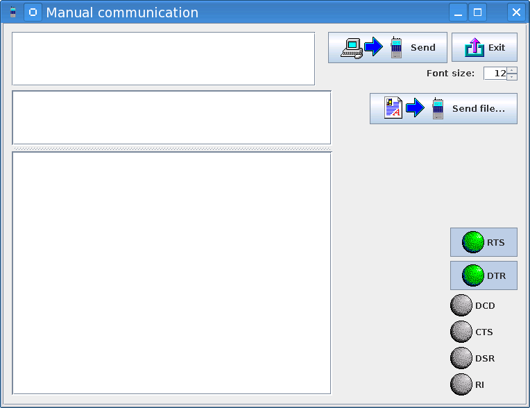

JYMAG - Manual commands' window

This window allows you to send your own commands to the phone. This can be helpful if
you want to check what a given command does or if you want to use a command that isn't
supported by JYMAG.
This window can also serve as a general-purpose serial port terminal allowing you to send
commands to any device, not just supported phones.
The port and its settings are the ones set in the main window.
- Type your command in the top text area.
- Press "Send" to send the command to the device. While waiting for the answer, the
command area and the "Send" button are disabled.
- The sent commands appear in the middle text area.
- The device's replies appear in the bottom area.
- Press "Exit" to close the window.
- Press "Clear" to clear the answers' area.
- Use the font size spinner to adjust the font size of this window.
- Use the "Send file" button to send a file to the device.
- Use the "RTS" and "DTR" push-buttons to control the state of the port's control signal lines.
- The circles show the current state of the given control signal line
(green - enabled, grey - disabled).